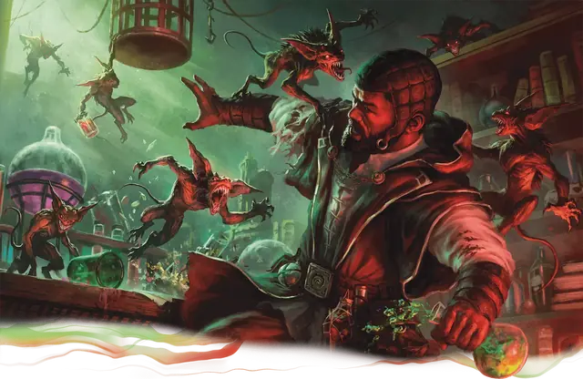

Гремишка
Gremishka
Крошечное Чудовище, Хаотичное Злое

Класс Защиты 14 Инициатива +2 (12)
Хиты 31 (7к4 + 14)
Скорость 30 футов
| мод | спас | ||
|---|---|---|---|
| СИЛ | 12 | +1 | +1 |
| ЛОВ | 14 | +2 | +2 |
| ТЕЛ | 15 | +2 | +2 |
| мод | спас | ||
|---|---|---|---|
| ИНТ | 11 | +0 | +0 |
| МДР | 14 | +2 | +2 |
| ХАР | 4 | −3 | −3 |
Сопротивление урону (только в форме роя) Дробящий, Колющий, Рубящий
Иммунитеты (только в форме роя); Испуганный, Окаменевший, Опрокинутый, Опутанный, Очарованный, Ошеломлённый, Парализованный, Схваченный
Чувства Тёмное зрение 30 футов, пассивное Восприятие 12
Языки понимает Общий, но не говорит
Опасность 2 (450 опыта; БВ +2)
Особенности
Сопротивление магии. Гремишка совершает с Преимуществом спасброски от заклинаний и прочих магических эффектов.
Рой (только в форме роя). Рой может занимать пространство другого существа и наоборот, а также рой может проходить через отверстия, которые достаточно велики для Крошечного существа. Рой не может восстанавливать Хиты или получать Временные хиты.
Действия
Укус (только в форме отдельного существа). Бросок рукопашной атаки: +4, досягаемость 5 фт. Попадание: 5 (1к6 + 2) Колющего урона плюс 7 (2к6) Силового урона.
Кишащие укусы (только в форме роя). Бросок рукопашной атаки: +4, досягаемость 5 фт. Попадание: 12 (3к6 + 2) Колющего урона — или 9 (3к4 + 2) Колющего урона, если рой Окровавлен, — плюс 7 (2к6) Силового урона. Если цель настроена на магические предметы, одна из её Настроек оканчивается (на выбор Мастера).
Реакции
Аллергия на магию (только в форме отдельного существа; 1/день). Условие: Существо в пределах 30 футов от гремишки сотворяет заклинание. Эффект: Гремишка восстанавливает 15 Хитов, а затем становится Средним роем Крошечных существ.
Бонус мастерства +2
Среда обитания Город
Сокровища Магические
Гремишка
Чувствительная к магии бестия-магоборец
Гремишки — магически нестабильные творения заблудших заклинателей. Эти ходячие катастрофы наслаждаются, мучая заклинателей, и стремятся уничтожить всё, что с ними связано, особенно книги заклинаний, магические компоненты и фамильяров. Подвергнувшись воздействию магии, одинокая гремишка взрывается разрушительным роем своих двойников.